"Em um Massacre no Morumbis em 17 de agosto de 2025, o Vasco humilhou o Santos com uma goleada de 6 a 0 — a maior da história do clássico — deixando Neymar em lágrimas após a derrota.
Este é o espaço onde compartilho as últimas notícias do mundo esportivo. Fique por dentro do Brasileirão, futebol e tudo que movimenta a paixão pelo esporte
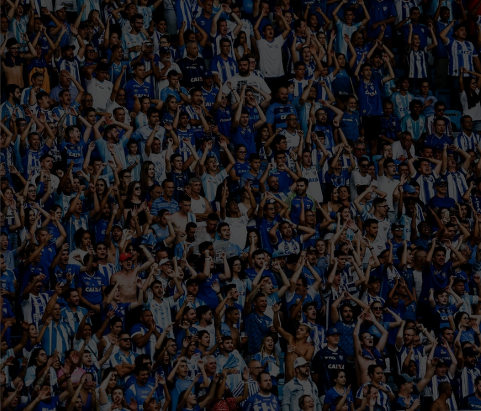
Aqui você encontra reflexões sobre decisões do governo, debates atuais e acontecimentos que influenciam nossa vida como sociedade.
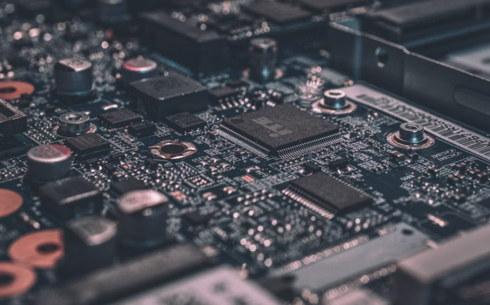
Pesquisas recentes em tecnologia estão abrindo novas fronteiras em diferentes áreas, desde a exploração da atmosfera até o entretenimento doméstico.
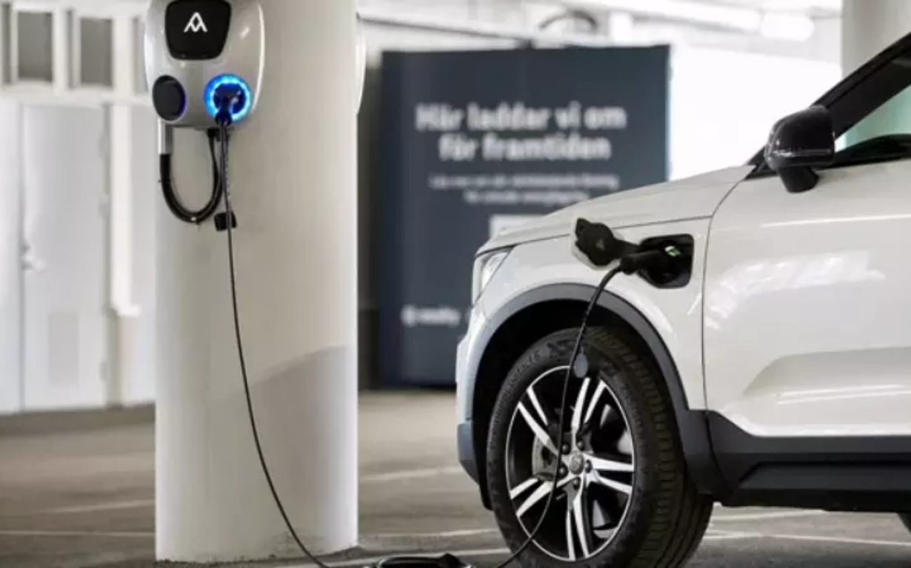
Starship de Elon Musk se prepara para novo voo após sequência de testes...
Saiba MaisCarros elétricos ganham destaque no Brasil e revelam tendências importantes...
Saiba MaisInteligência Artificial transforma empregos, educação e entretenimento...
Saiba MaisFilmes que emocionam, séries para maratonar, músicas que marcam momentos e curiosidades que você talvez nunca tenha visto. Este é o meu espaço para falar de tudo isso.
Semana do Cinema acontece de...
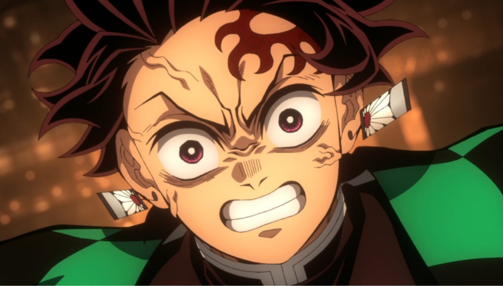
Os fãs de anime já podem marcar...
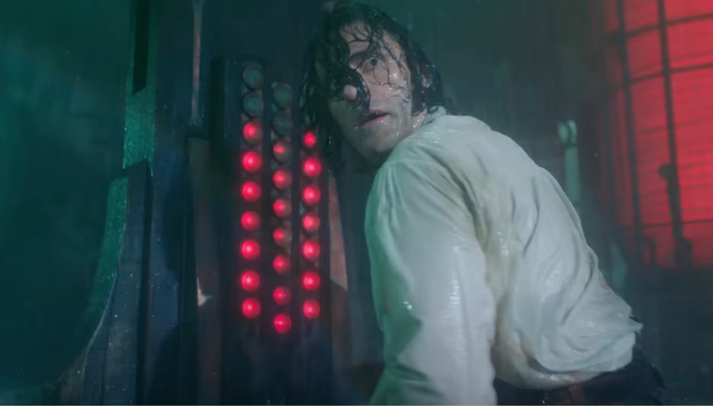
Guillermo del Toro concretiza...
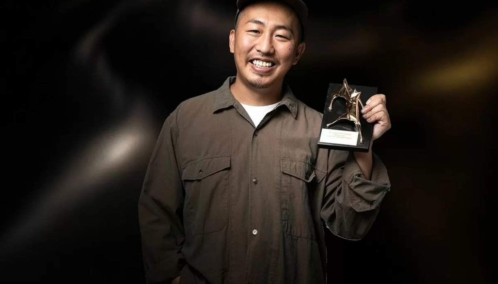
Sho Miyake, vencedor em Locarno...
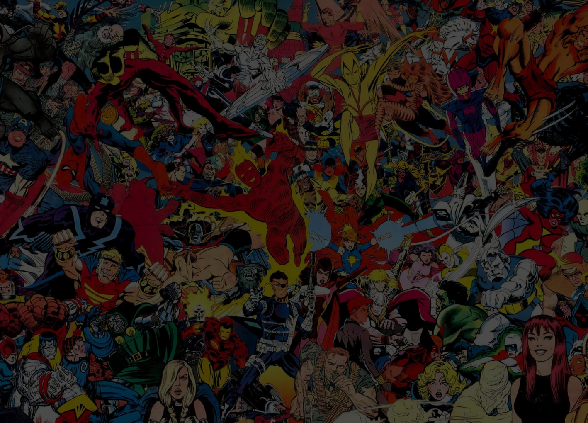
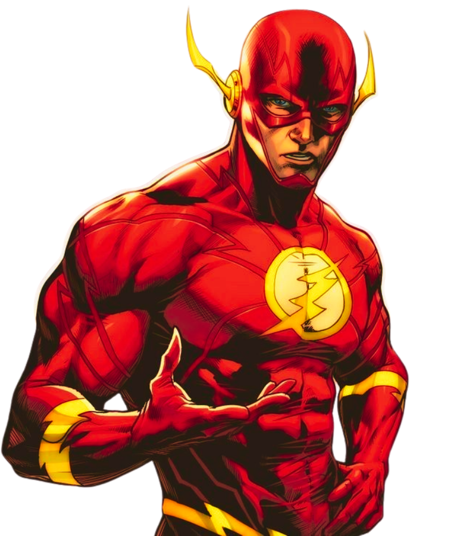
Este é o espaço onde compartilho minhas paixões. Veja minhas últimas opiniões sobre os filmes e séries do universo dos heróis, acompanhe crossovers épicos e descubra histórias que desafiam a imaginação.
Bancos, negócios, imposto de renda, cashback e muito mais. Aqui eu reúno minhas ideias e observações sobre como o dinheiro circula e afeta nossas escolhas no dia a dia. Um espaço para pensar sobre oportunidades e desafios da economia.
Chance em Dobro: Ganhe R$100 Abrindo Conta no Sofisa Direto e Aplicando em...
Procon multa Gol, Latam e Azul por cobrança antecipada de assentos e...
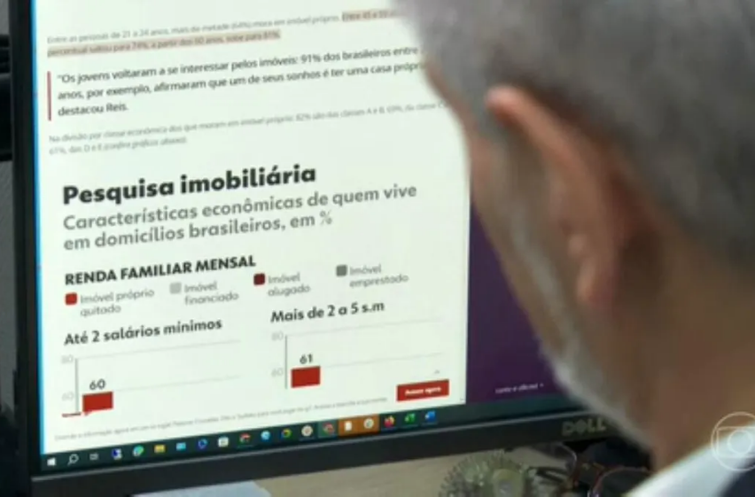
Governo estuda regulamentar nova modalidade de crédito, com garantia em imóvel...
Na tarde do último domingo, 17 de agosto de 2025, o Estádio Morumbis transformou-se no palco de uma das derrotas mais traumáticas da história recente do Santos no Brasileirão. O Vasco da Gama, em SOS de urgência, aplicou uma goleada avassaladora e histórica de 6 a 0 — a maior diferença de gols já registrada nessa rivalidade
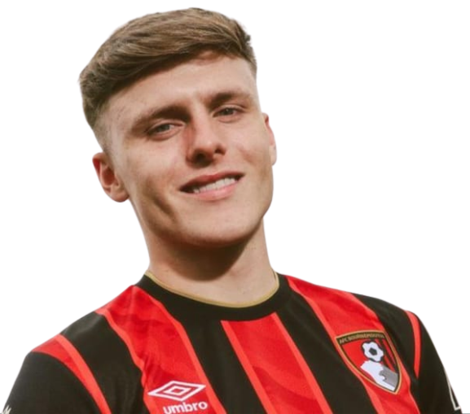
O Liverpool passa por mudanças importantes no seu elenco neste verão, com a saída de talentos promissores como Ben Doak. O jovem extremo escocês, que chegou a ser apontado como possível reforço do FC Porto, foi oficialmente contratado pelo Bournemouth em uma negociação que movimentou cerca de R$ 183 milhões.
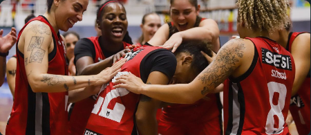
Sampaio Basquete vs. Sesi Araraquara. Esse duelo ocorrerá na terça-feira, dia 19 de agosto de 2025, e é batido como uma partida decisiva, valendo o título da LBF 2025...
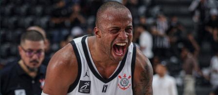
Após uma vitória importante do Mogi (outra partida referenciada), o Corinthians visita o Limeira com o objetivo de manter o aproveitamento de 100% no Campeonato...
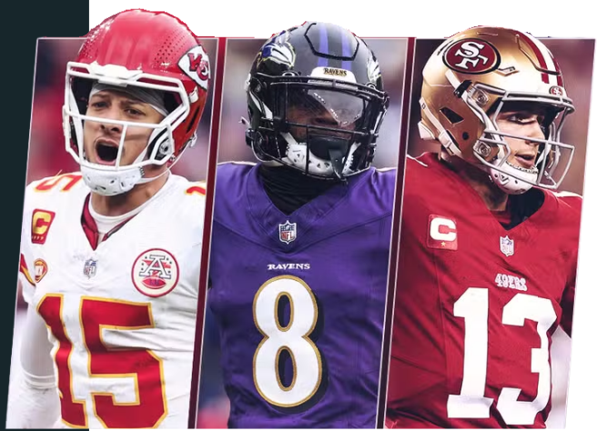
A temporada da NFL será oficialmente iniciada em 4 de setembro de 2025, com o Super Bowl LX marcado para 8 de fevereiro de 2026, no Levi’s Stadium, na Califórnia. As regras para o kickoffs foram ajustadas — agora o time que recebe a bola começa na linha das 35 jardas se o chute entrar ou passar a end zone — e celebrações como "limpar o nariz" foram sancionadas como conduta antidesportiva. O sistema Hawk-eye passará a ser usado para medições virtuais de first down.
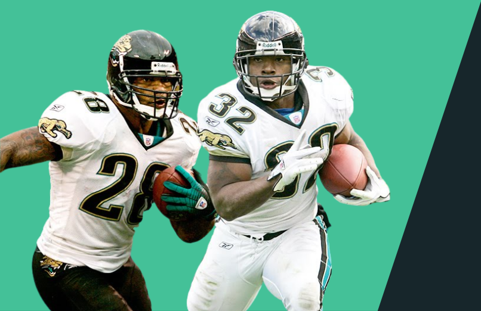
Pré-temporada: Steelers e Jaguars em destaque O kicker veterano Chris Boswell, do Pittsburgh Steelers, encerrou sua paralisação contratual e voltou a campo no último jogo de pré-temporada contra os Buccaneers. Apesar das negociações ainda em andamento, ele permanece sob contrato até 2026.
O coordenador defensivo Teryl Austin comentou que nomes populares como Beanie Bishop Jr. agora estão na “roda do corte”, mesmo com boas atuações, devido à chegada de veteranos como Darius Slay, Brandin Echols e Jalen Ramsey. Bishop, apesar de inegável esforço, pode ser prejudicado por seu tamanho e habilidades físicas limitadas
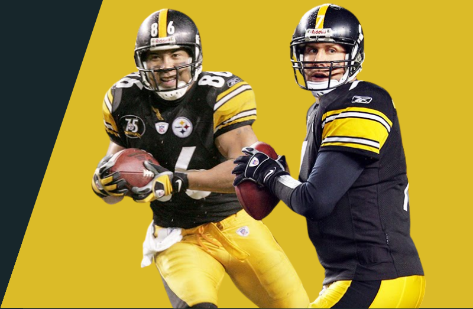
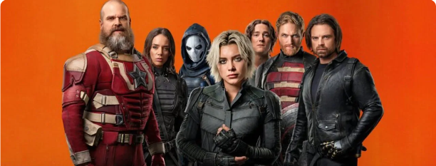
Thunderbolts* atraiu pouco mais de 2 milhões de pessoas às telonas nos cinemas brasileiros.
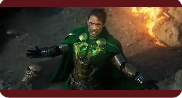
Data do trailer de Vingadores: Doomsday pode ter sido revelada...
Saiba Mais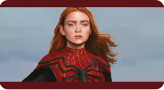
Homem-Aranha 4: Detalhes da personagem de Sadie Sink são revelados...
Saiba MaisVingadores: Guerras Secretas tem seu protagonista confirmado...
Saiba MaisQuarteto Fantástico: Primeiros Passos ganha previsão para entrar..
Saiba Mais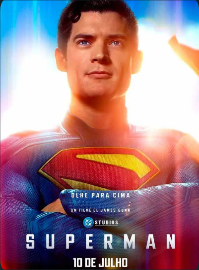
Após anos de resultados irregulares, a Warner Bros. Discovery encontrou um novo rumo para a DC. Com a criação da DC Studios, sob o comando de James Gunn e Peter Safran, a empresa apostou em um universo cinematográfico coeso, rivalizando diretamente com o Universo da Marvel
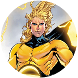
Sentinela: Tudo sobre o herói mais poderoso da Marvel.
Homem-Aranha 4: Vaza a possível vilã do filme
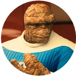
Após 18 anos, Marvel corrige o maior erro do Quarteto Fantástico
Como o Homem de Ferro se tornará vilão Doutor Destino
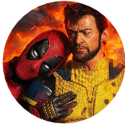
Deadpool & Wolverine fez piada com o tapa de Will Smith
A Warner Bros. Interactive Entertainment, TT Games e o Grupo LEGO se juntam mais uma vez para trazer LEGO® Batman™ 2: DC Super Heroes, a sequência muito aguardada do jogo mais vendido de todos os tempos, apresentando os super-heróis mais poderosos do universo DC Comics.
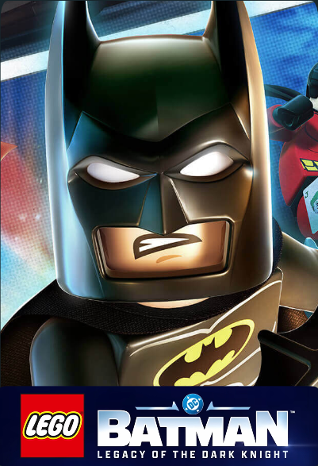
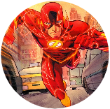
Atuando em Central City como o Flash
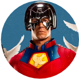
Pacificador um anti-herói obcecado pela paz
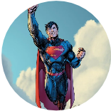
Nascido em Krypton enviado à Terra, onde cresceu o Clark Kent.
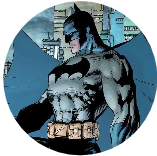
Batman é um super-herói com inteligência, habilidades de combate
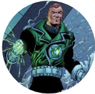
Guy Gardner é um dos portadores do anel do Lanterna Verde,
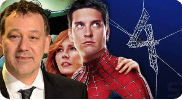
Como seria o Homem-Aranha 4 de Sam Raimi (e por que ele foi...
Saiba MaisNem Duende Verde, Nem Venom: O novo vilão do Homem-Aranha...
Saiba MaisCom Zendaya no set, Homem-Aranha 4 produz cena inspirada...
Saiba Mais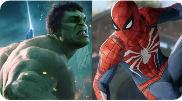
Homem-Aranha: Um Novo Dia pode marcar o retorno do Hulk Selvagem...
Saiba Mais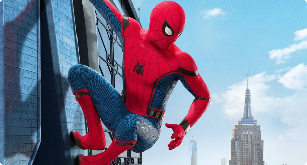
O longa promete ser um dos capítulos mais aguardados do Homem-Aranha de Tom Holland, trazendo não apenas novos vilões e aliados, mas também expandindo o universo do herói no MCU.